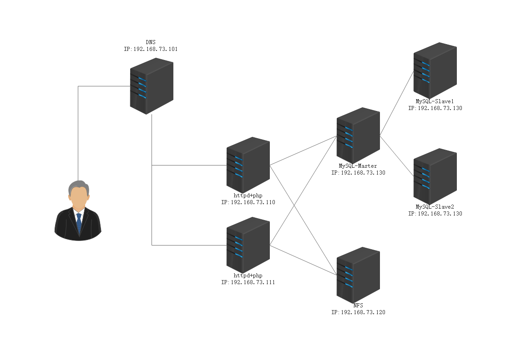
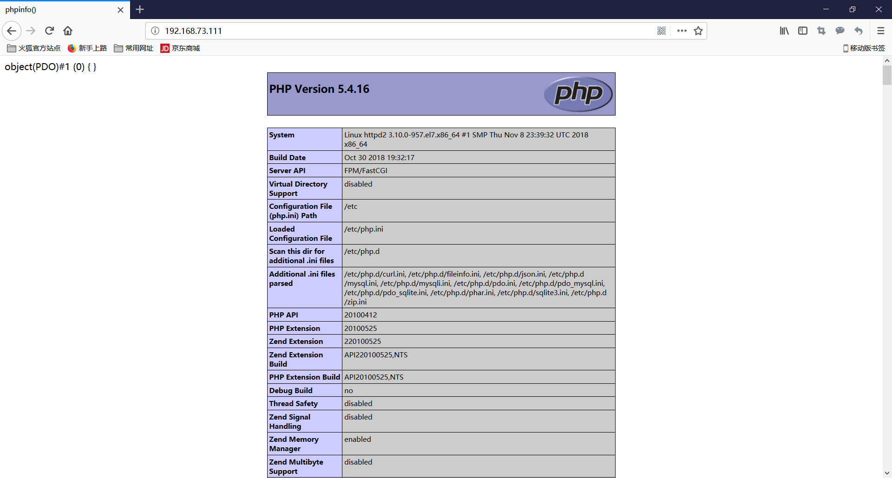

在互联网上架构如下图所示，本节将演示如何实现以下架构并安装wordpress，此处以DNS作为高可用和负载均衡。

主机类型
主机名
系统
IP
Client
Clinet
Fedora30
192.168.73.153
DNS
DNS
CentOS7.6
192.168.73.101
HTTPD+PHP
HTTPD
CentOS7.6
192.168.73.110
HTTPD+PHP
HTTPD2
CentOS7.6
192.168.73.111
NFS
nfs
CentOS7.6
192.168.73.120
MySQL
Master
CentOS7.6
192.168.73.130
MySQL
Slave1
CentOS7.6
192.168.73.131
MySQL
Slave2
CentOS7.6
192.168.73.132
一、搭建MySQL主从 在所有MySQL服务器安装MySQL服务
1 yum install mariadb-server -y
Master节点操作 1.配置主节点服务器
1 2 3 4 5 [root@master ~] [mysqld] server-id=1 log-bin=/data/bin/mysql-bin binlog-format=row
2.创建二进制日志目录
1 2 3 [root@master ~] [root@master ~] [root@master ~]
3.启动MySQL服务
4.创建一个用来主从复制的账号
5.查看二进制日志，记录日志大小
1 2 3 4 5 6 7 8 [root@master ~] +------------------+-----------+ | Log_name | File_size | +------------------+-----------+ | mysql-bin.000001 | 26753 | | mysql-bin.000002 | 921736 | | mysql-bin.000003 | 402 | +------------------+-----------+
Slave1节点操作 1.修改配置文件
1 2 3 4 [root@slave1 ~] [mysqld] server-id=2 read-only
2.启动服务
3.CHANGE MASTER TO
1 2 3 [root@slave1 ~] MariaDB [(none)]> CHANGE MASTER TO MASTER_HOST='192.168.73.130' , MASTER_USER='repluser' , MASTER_PASSWORD='111111' , MASTER_PORT=3306, MASTER_LOG_FILE='mysql-bin.000003' , MASTER_LOG_POS=402; Query OK, 0 rows affected (0.01 sec)
4.查看slave状态
1 2 3 4 5 6 7 8 9 10 11 12 13 14 15 16 17 18 19 20 21 22 23 24 25 26 27 28 29 30 31 32 33 34 35 36 37 38 39 40 41 42 43 44 45 MariaDB [(none)]> SHOW SLAVE STATUS\G; *************************** 1. row *************************** Slave_IO_State: Master_Host: 192.168.73.130 Master_User: repluser Master_Port: 3306 Connect_Retry: 60 Master_Log_File: mysql-bin.000003 Read_Master_Log_Pos: 402 Relay_Log_File: mariadb-relay-bin.000001 Relay_Log_Pos: 4 Relay_Master_Log_File: mysql-bin.000003 Slave_IO_Running: No Slave_SQL_Running: No Replicate_Do_DB: Replicate_Ignore_DB: Replicate_Do_Table: Replicate_Ignore_Table: Replicate_Wild_Do_Table: Replicate_Wild_Ignore_Table: Last_Errno: 0 Last_Error: Skip_Counter: 0 Exec_Master_Log_Pos: 402 Relay_Log_Space: 245 Until_Condition: None Until_Log_File: Until_Log_Pos: 0 Master_SSL_Allowed: No Master_SSL_CA_File: Master_SSL_CA_Path: Master_SSL_Cert: Master_SSL_Cipher: Master_SSL_Key: Seconds_Behind_Master: NULL Master_SSL_Verify_Server_Cert: No Last_IO_Errno: 0 Last_IO_Error: Last_SQL_Errno: 0 Last_SQL_Error: Replicate_Ignore_Server_Ids: Master_Server_Id: 0 1 row in set (0.00 sec) ERROR: No query specified
5.启动复制线程
1 2 MariaDB [(none)]> START SLAVE; Query OK, 0 rows affected (0.00 sec)
6.查看slave状态
1 2 3 4 5 6 7 8 9 10 11 12 13 14 15 16 17 18 19 20 21 22 23 24 25 26 27 28 29 30 31 32 33 34 35 36 37 38 39 40 41 42 43 44 45 MariaDB [(none)]> SHOW SLAVE STATUS\G; *************************** 1. row *************************** Slave_IO_State: Waiting for master to send event Master_Host: 192.168.73.130 Master_User: repluser Master_Port: 3306 Connect_Retry: 60 Master_Log_File: mysql-bin.000003 Read_Master_Log_Pos: 402 Relay_Log_File: mariadb-relay-bin.000002 Relay_Log_Pos: 529 Relay_Master_Log_File: mysql-bin.000003 Slave_IO_Running: Yes Slave_SQL_Running: Yes Replicate_Do_DB: Replicate_Ignore_DB: Replicate_Do_Table: Replicate_Ignore_Table: Replicate_Wild_Do_Table: Replicate_Wild_Ignore_Table: Last_Errno: 0 Last_Error: Skip_Counter: 0 Exec_Master_Log_Pos: 402 Relay_Log_Space: 825 Until_Condition: None Until_Log_File: Until_Log_Pos: 0 Master_SSL_Allowed: No Master_SSL_CA_File: Master_SSL_CA_Path: Master_SSL_Cert: Master_SSL_Cipher: Master_SSL_Key: Seconds_Behind_Master: 0 Master_SSL_Verify_Server_Cert: No Last_IO_Errno: 0 Last_IO_Error: Last_SQL_Errno: 0 Last_SQL_Error: Replicate_Ignore_Server_Ids: Master_Server_Id: 1 1 row in set (0.00 sec) ERROR: No query specified
7.测试
主节点导入测试表
8.slave1节点查看
1 2 3 4 5 6 7 8 9 10 [root@slave1 ~] +--------------------+ | Database | +--------------------+ | information_schema | | hellodb | | mysql | | performance_schema | | test | +--------------------+
Slave1节点搭建完毕
Slave2节点操作 1.修改配置文件
1 2 3 4 [root@slave2 ~] [mysqld] server-id=3 read-only
2.启动MySQL服务
3.CHANGE MASTER TO
1 2 3 [root@slave2 ~] MariaDB [(none)]> CHANGE MASTER TO MASTER_HOST='192.168.73.130' , MASTER_USER='repluser' , MASTER_PASSWORD='111111' , MASTER_PORT=3306, MASTER_LOG_FILE='mysql-bin.000003' , MASTER_LOG_POS=402; Query OK, 0 rows affected (0.01 sec)
4.查看slave状态
1 2 3 4 5 6 7 8 9 10 11 12 13 14 15 16 17 18 19 20 21 22 23 24 25 26 27 28 29 30 31 32 33 34 35 36 37 38 39 40 41 42 43 44 45 MariaDB [(none)]> SHOW SLAVE STATUS\G; *************************** 1. row *************************** Slave_IO_State: Master_Host: 192.168.73.130 Master_User: repluser Master_Port: 3306 Connect_Retry: 60 Master_Log_File: mysql-bin.000003 Read_Master_Log_Pos: 402 Relay_Log_File: mariadb-relay-bin.000001 Relay_Log_Pos: 4 Relay_Master_Log_File: mysql-bin.000003 Slave_IO_Running: No Slave_SQL_Running: No Replicate_Do_DB: Replicate_Ignore_DB: Replicate_Do_Table: Replicate_Ignore_Table: Replicate_Wild_Do_Table: Replicate_Wild_Ignore_Table: Last_Errno: 0 Last_Error: Skip_Counter: 0 Exec_Master_Log_Pos: 402 Relay_Log_Space: 245 Until_Condition: None Until_Log_File: Until_Log_Pos: 0 Master_SSL_Allowed: No Master_SSL_CA_File: Master_SSL_CA_Path: Master_SSL_Cert: Master_SSL_Cipher: Master_SSL_Key: Seconds_Behind_Master: NULL Master_SSL_Verify_Server_Cert: No Last_IO_Errno: 0 Last_IO_Error: Last_SQL_Errno: 0 Last_SQL_Error: Replicate_Ignore_Server_Ids: Master_Server_Id: 0 1 row in set (0.00 sec) ERROR: No query specified
5.启动复制线程
1 2 MariaDB [(none)]> START SLAVE; Query OK, 0 rows affected (0.00 sec)
6.查看数据库是否同步
1 2 3 4 5 6 7 8 9 10 11 MariaDB [(none)]> SHOW DATABASES; +--------------------+ | Database | +--------------------+ | information_schema | | hellodb | | mysql | | performance_schema | | test | +--------------------+ 5 rows in set (0.00 sec)
数据库主从搭建完毕
二、搭建HTTPD+PHP 分别在两台httpd主机上安装httpd和php-fpm
1 yum install httpd php-fpm php-mysql -y
配置httpd服务器 1.查看fcgi相关模块是否启用
1 2 3 4 5 6 7 8 9 10 11 12 [root@httpd ~] proxy_module (shared) proxy_ajp_module (shared) proxy_balancer_module (shared) proxy_connect_module (shared) proxy_express_module (shared) proxy_fcgi_module (shared) proxy_fdpass_module (shared) proxy_ftp_module (shared) proxy_http_module (shared) proxy_scgi_module (shared) proxy_wstunnel_module (shared)
2.修改httpd配置文件
1 2 3 4 5 6 7 8 9 10 11 12 13 14 15 [root@httpd ~] DirectoryIndex index.php index.html addtype application/x-httpd-php .php addtype applictaion/x-httpd-php-source .phps proxyrequests off proxyPassMatch ^/(.*\.php)$ unix:/var/run/php.sock|fcgi://localhost/data/test /$1 <Virtualhost *:80> servername blog.mylinuxops.com Documentroot /data/test <directory /data/test > require all granted </directory> </Virtualhost>
3.修改php-fpm配置文件
1 2 3 4 5 [root@httpd ~] ;listen = 127.0.0.1:9000 listen = /var/run/php.sock listen.mode = 0666 ;listen.allowed_clients = 127.0.0.1
4.修改php.ini中时区
1 2 [root@httpd ~] date.timezone = Asia/Shanghai
5.启动httpd、php-fpm
6.创建测试页
1 2 3 4 5 6 7 8 9 [root@httpd ~] [root@httpd ~] <?php $dsn ='mysql:host=192.168.73.130;dbname=test' ;$username ='repluser' ; $passwd ='111111' ;$dbh =new PDO($dsn ,$username ,$passwd );var_dump($dbh ); phpinfo(); ?>
7.测试
配置httpd2服务器 1.从httpd服务器将httpd配置文件及php-fpm配置文件复制至httpd2
1 2 [root@httpd ~] [root@httpd ~]
2.启动服务
3.创建测试页
1 2 3 4 5 6 7 8 9 [root@httpd ~] [root@httpd ~] <?php $dsn ='mysql:host=192.168.73.130;dbname=test' ;$username ='repluser' ; $passwd ='111111' ;$dbh =new PDO($dsn ,$username ,$passwd );var_dump($dbh ); phpinfo(); ?>
4.测试

配置dns服务器 1.安装bind服务
2.修改主配置文件
1 2 3 4 5 [root@dns ~] // listen-on port 53 { 127.0.0.1; }; // listen-on-v6 port 53 { ::1; }; // allow-query { localhost; };
3.添加区域记录
1 2 3 4 5 [root@dns ~] zone "mylinuxops.com" IN { type master; file "mylinuxops.com.zone" ; };
4.创建区域数据库文件
1 2 3 4 5 6 7 8 9 10 11 12 13 [root@dns etc] [root@dns etc] $TTL 1D@ IN SOA master admin.mylinuxops.com ( 0 ; serial 1D ; refresh 1H ; retry 1W ; expire 3H ) ; minimum NS master master A 192.168.73.101 www A 192.168.73.110 www A 192.168.73.111
5.检查语法错误
1 2 3 4 [root@dns etc] [root@dns etc] zone mylinuxops.com/IN: loaded serial 0 OK
6.启动服务
7.测试
1 2 3 4 5 6 7 8 9 10 11 12 13 14 15 16 17 18 19 20 21 22 23 24 25 26 27 [root@dns etc] ; <<>> DiG 9.9.4-RedHat-9.9.4-72.el7 <<>> www.mylinuxops.com @192.168.73.101 ;; global options: +cmd ;; Got answer: ;; ->>HEADER<<- opcode: QUERY, status: NOERROR, id: 10093 ;; flags: qr aa rd ra; QUERY: 1, ANSWER: 2, AUTHORITY: 1, ADDITIONAL: 2 ;; OPT PSEUDOSECTION: ; EDNS: version: 0, flags:; udp: 4096 ;; QUESTION SECTION: ;www.mylinuxops.com. IN A ;; ANSWER SECTION: www.mylinuxops.com. 86400 IN A 192.168.73.111 www.mylinuxops.com. 86400 IN A 192.168.73.110 ;; AUTHORITY SECTION: mylinuxops.com. 86400 IN NS master.mylinuxops.com. ;; ADDITIONAL SECTION: master.mylinuxops.com. 86400 IN A 192.168.73.101 ;; Query time: 0 msec ;; SERVER: 192.168.73.101#53(192.168.73.101) ;; WHEN: Fri May 17 06:00:35 CST 2019 ;; MSG SIZE rcvd: 116
配置NFS服务 1.创建出需要共享的目录，修改权限
1 2 [root@localhost ~] [root@localhost ~]
2.修改配置文件
1 2 [root@localhost ~] /data/test *(rw)
3.在httpd挂载nfs
1 2 3 4 [root@httpd ~] Export list for 192.168.73.120: /data/test * [root@httpd ~]
4.在httpd2上挂载nfs
1 2 3 4 [root@httpd2 ~] Export list for 192.168.73.120: /data/test * [root@httpd2 ~]
5.在/data/test中创建测试页
1 2 3 4 5 6 7 <?php $dsn ='mysql:host=192.168.73.130;dbname=test' ;$username ='repluser' ; $passwd ='111111' ;$dbh =new PDO($dsn ,$username ,$passwd );var_dump($dbh ); phpinfo(); ?>
客户端测试 1.测试DNS
1 2 3 4 5 6 7 8 9 10 11 12 13 14 15 16 17 18 19 20 21 22 23 24 25 26 27 28 29 30 31 32 33 34 35 36 37 38 39 40 41 42 43 44 45 46 47 48 49 50 51 52 53 54 55 56 [root@localhost ~] ; <<>> DiG 9.11.5-P4-RedHat-9.11.5-13.P4.fc30 <<>> www.mylinuxops.com ;; global options: +cmd ;; Got answer: ;; ->>HEADER<<- opcode: QUERY, status: NOERROR, id: 37179 ;; flags: qr aa rd ra; QUERY: 1, ANSWER: 2, AUTHORITY: 1, ADDITIONAL: 2 ;; OPT PSEUDOSECTION: ; EDNS: version: 0, flags:; udp: 4096 ;; QUESTION SECTION: ;www.mylinuxops.com. IN A ;; ANSWER SECTION: www.mylinuxops.com. 86400 IN A 192.168.73.111 www.mylinuxops.com. 86400 IN A 192.168.73.110 ;; AUTHORITY SECTION: mylinuxops.com. 86400 IN NS master.mylinuxops.com. ;; ADDITIONAL SECTION: master.mylinuxops.com. 86400 IN A 192.168.73.101 ;; Query time: 0 msec ;; SERVER: 192.168.73.101#53(192.168.73.101) ;; WHEN: Thu May 16 22:54:46 CST 2019 ;; MSG SIZE rcvd: 116 [root@localhost ~]# dig www.mylinuxops.com ; <<>> DiG 9.11.5-P4-RedHat-9.11.5-13.P4.fc30 <<>> www.mylinuxops.com ;; global options: +cmd ;; Got answer: ;; ->>HEADER<<- opcode : QUERY, status: NOERROR, id: 63256;; flags: qr aa rd ra; QUERY: 1, ANSWER: 2, AUTHORITY: 1, ADDITIONAL: 2 ;; OPT PSEUDOSECTION: ; EDNS: version: 0, flags:; udp: 4096 ;; QUESTION SECTION: ;www.mylinuxops.com. IN A ;; ANSWER SECTION: www.mylinuxops.com. 86400 IN A 192.168.73.110 www.mylinuxops.com. 86400 IN A 192.168.73.111 ;; AUTHORITY SECTION: mylinuxops.com. 86400 IN NS master.mylinuxops.com. ;; ADDITIONAL SECTION: master.mylinuxops.com. 86400 IN A 192.168.73.101 ;; Query time: 0 msec ;; SERVER: 192.168.73.101 ;; WHEN: Thu May 16 22:54:47 CST 2019 ;; MSG SIZE rcvd: 116
2.测试站点访问
测试安装wordpress 1.解压wordpress到/data/test
2.创建wordpress所需数据库及账户
1 2 [root@master ~] [root@master ~]
3.修改wordpress配置文件
1 2 3 4 5 6 7 8 9 10 11 12 13 14 [root@httpd ~] [root@httpd ~] // ** MySQL 设置 - 具体信息来自您正在使用的主机 ** // /** WordPress数据库的名称 */ define('DB_NAME' , 'wordpress' ); /** MySQL数据库用户名 */ define('DB_USER' , 'wpuser' ); /** MySQL数据库密码 */ define('DB_PASSWORD' , '111111' ); /** MySQL主机 */ define('DB_HOST' , '192.168.73.130' );
4.在客户端测试访问